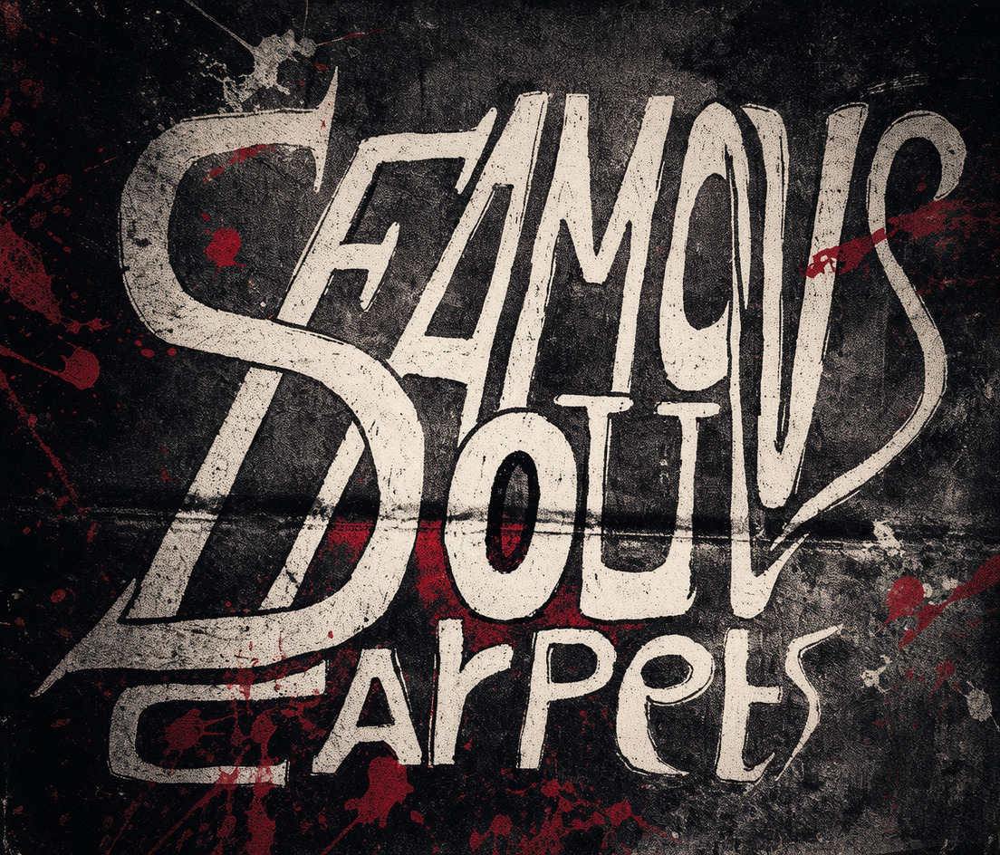
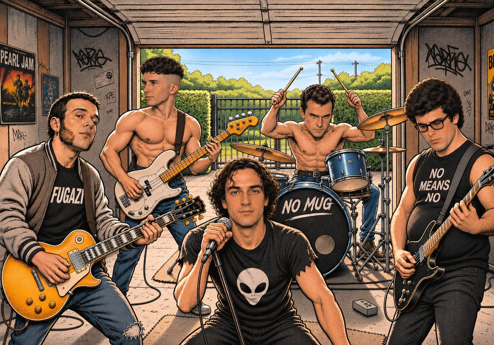
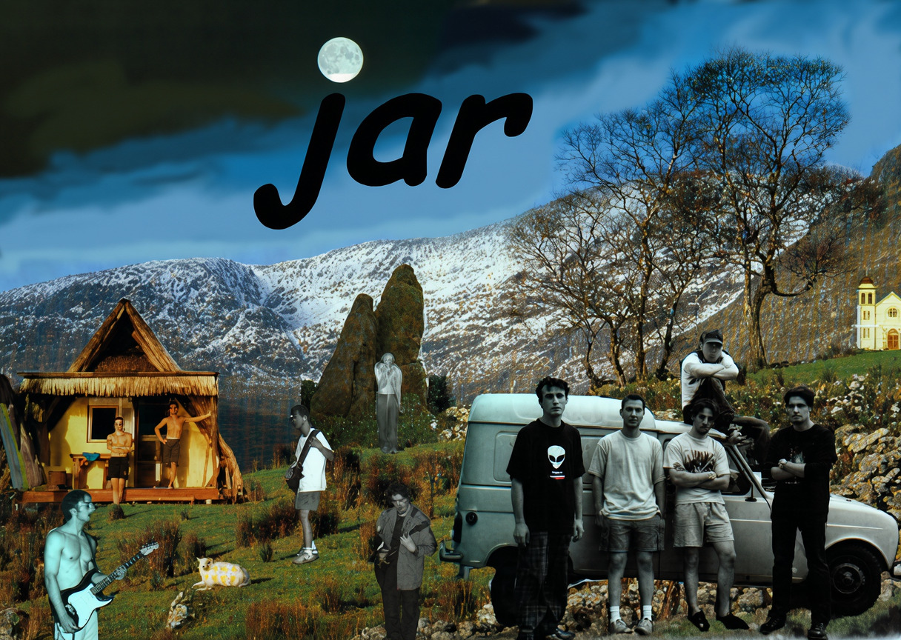
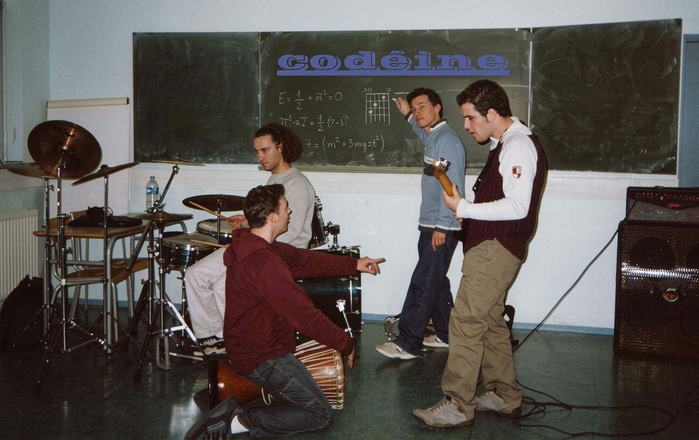
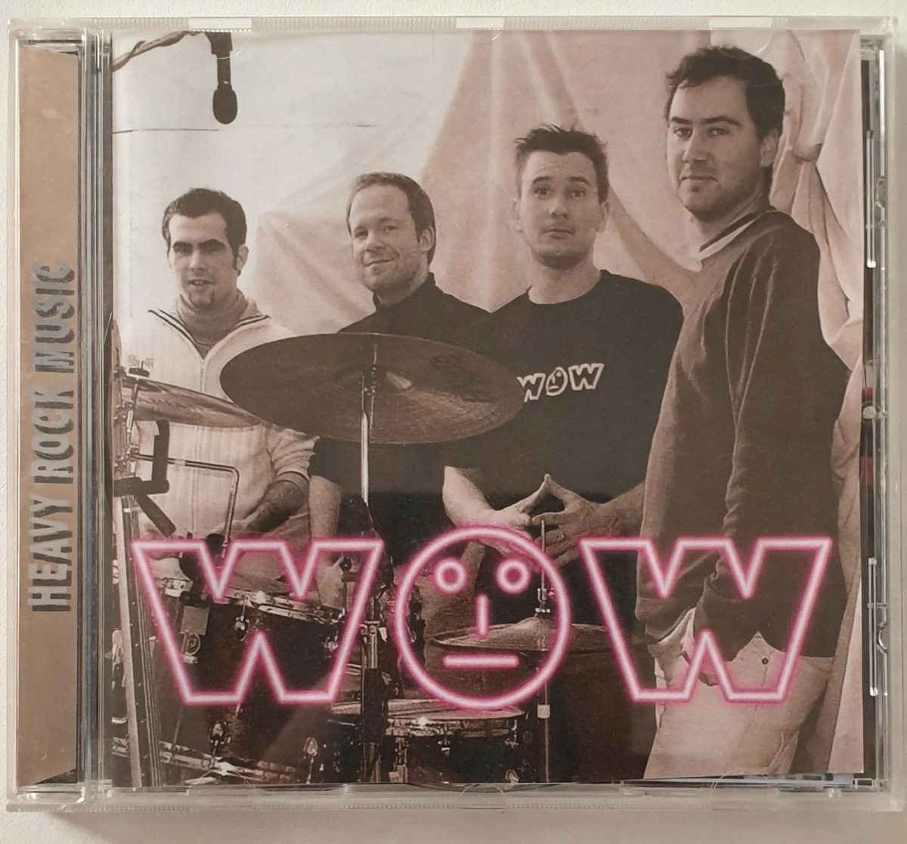
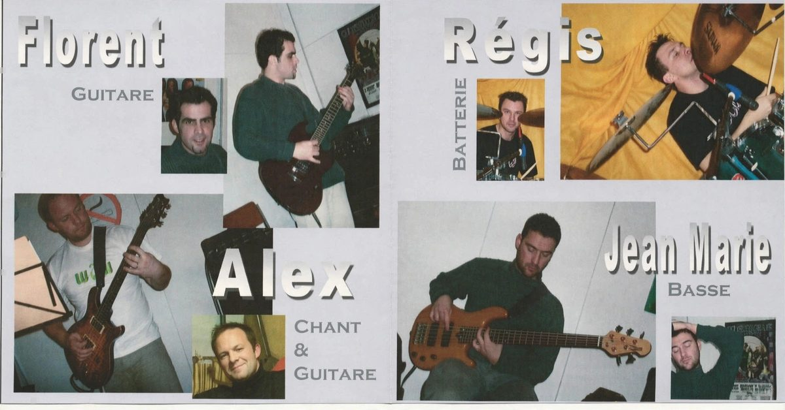
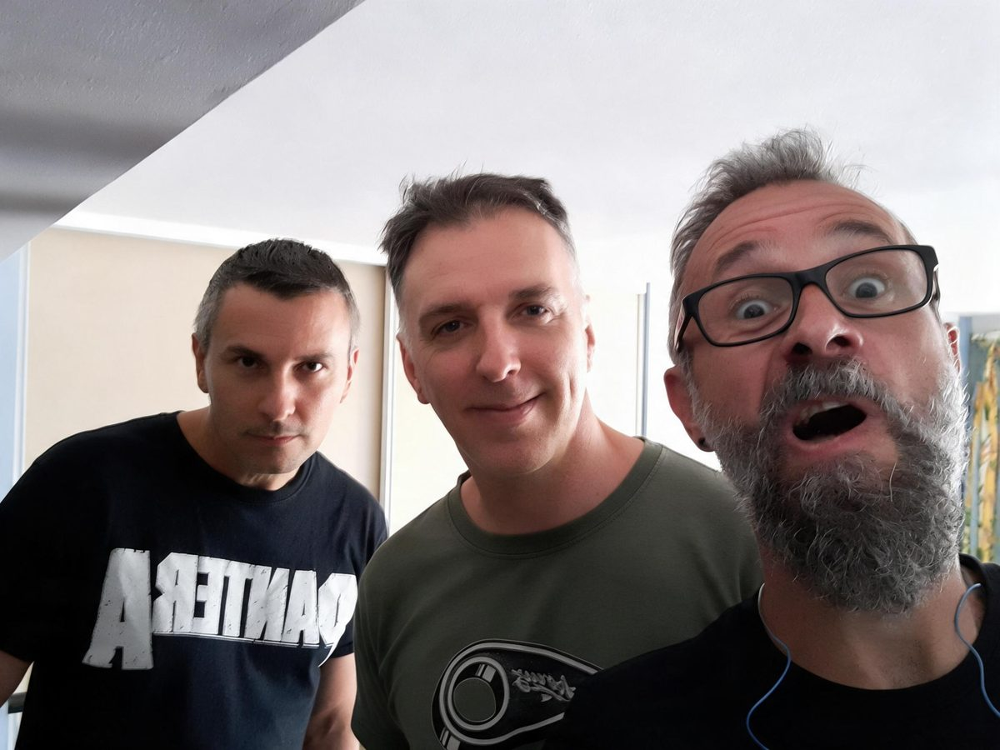

THE STORY
The original text, as it was written at the time.
THE STORY OF THE BAND
Taken as it is from the band's archives.
At the start, a quartet “les rotoplo fires”, which makes up a third of the base of Jar. Tanguy on drums (with the sound of a wooden cassette box hit with energy...), Loran singer — and lady-killer hero to roll on the ground for —, Régis on electric guitar (with one string...) and Tony on the smooby synth. In short, everything to succeed...
Based in Saint-Erblon in Mayenne, not far from Rennes and Angers. The band stays mainly influenced by the French alternative wave (berrus, Parabellum, OTH...).
This one does not take long to change name, naturally favouring songs with words... it was DESASTRAX, the time to record a four-track cassette on a tape recorder of the time. And the band dissolves in 1988. Tanguy leaves Desastrax and a bit later starts the band Totem Stille, in Paris.
Tony, Régis and Loran meet from time to time to play and get involved musically as best they can (start of the struggle...) until 1991, with the arrival of Gilles who goes straight into the bass. Régis moves to drums, Loran to guitar and Tony to vocals: the progress shows. “Explicit” was born passing through “Soul Famous Carpet”. Régis keeping at it...

The rehearsals happened in the basement of the family house, in Saint-Erblon: the amps downstairs, the parents in front of the television upstairs. The sound went up through the floor, and it is in this raw acoustics that the sound of the band was shaped.
The rock explosion of Western France (Angers especially) pushes them to create fast. While the songs go by, Jérôme joins the quartet and the various influences multiply (Fugazi, Sonic Youth, les Thugs, les Skippies... and the unavoidable Nirvana).
Their first concert happened in Château-Gontier (53) on 2 September 1993, followed by a good performance. Looking back, Explicit becomes “No Mug”. Loran ends up joining the capital.

The band then takes the line of American hardcore fusion under the nameHELIUM, in 1996.
It is Jérôme's turn to leave the line-up, to make room for Jean-Jean and Florent for JAR in 1998. The band then reaches its peak and comes to record a 5-track CD in studio.

At the end of 1999 the band splits and stops all activity for 2 years. Some, missing music, then join other bands on the side (Jean-Marie joins Hippy Groovy and the Stylee Mens).
But in early 2002 the band does it again under the name CODEINE, WITHOUT TONY, and builds on new musical influences like INCUBUS and SEVENDUST, bringing in a new one: “Jean-François” on vocals.
The band then starts creating a music association: “ TOUS AZIC'MUTS ”, and so becomes, with Hippy Groovy, one of the 2 first members of the association.

December 2003: now it is Gilles who has to leave the band for work reasons. From then on the rest of the band keeps going and takes inspiration from a more metal style, with Florent moving to 7 strings.
Jean-François (Jef) leaves the band, and Alex arrives on vocals and guitar. The band then takes the name WÖW, with Régis, Jean-Marie (Jean-Jean), Florent and Alex — the goal being to take a more professional direction.
The concerts then continue in the region, until the band disappears in 2012.


The name we gave ourselves after an evening, for a rebuild of the band: Régis, Loran, Gilles and Tony. The first songs started to be born in 2022, like that, for the pleasure, then a few others — nothing concrete for the moment.
The songs of this project are in The Lab.

THE LINE-UPS
As the archives of the time kept them, completed up to 2012.
| Period | Line-up |
|---|---|
| Desastrax 1988 |
Tanguy (drums — wooden cassette box), Régis (one-string guitar), Tony (synthesizer), Loran (vocals) |
| No Mug Helium 1991-1998 |
Tony (vocals), Loran (guitar), Jérôme (guitar), Gilles (bass), Régis (drums) |
| Jar 1998-1999 |
Tony (vocals), Florent (guitar), Gilles (guitar), Jean-Marie (bass), Régis (drums) |
| Codéine 2002-2004 |
Jean-François (vocals), Florent (guitar — seven strings from 2003), Gilles (guitar, until December 2003), Jean-Marie (bass), Régis (drums) |
| Wöw 2004-2012 |
Alex (vocals, guitar), Florent (guitar), Jean-Marie (bass), Régis (drums) |
THE EVOLUTION OF THE STYLE
The musical style changed enormously because of the changes of players, but also because of the various musical influences the band met. The band went from a French alternative rock genre to a more American hardcore genre, being influenced by bands in the Dischord line like Fugazi and Quicksand.
The grunge boom also started a certain melody in the riffs with a punky sauce; the explosion of bands like Sonic Youth, Mudhoney, Pearl Jam, Soundgarden and necessarily Nirvana was the cause of many changes. Then it was the turn of Smashing Pumpkins, Tool, RATM... Today their musical style is closer to new metal bands like Korn, Limp Bizkit, VOD and Deftones.
Musically, one could say that Jar it is influenced by everything it knows: the sound is quite heavy, with a predominance of saturated guitars, the tempo stays fast without being too much, and the voice can be as melodic as not at all — up to you to judge...
French alternative rock American hardcore (Fugazi, Quicksand) Grunge (Sonic Youth, Mudhoney, Pearl Jam, Soundgarden, Nirvana) Smashing Pumpkins, Tool, RATM Metal (Korn, Limp Bizkit, VOD, Deftones)
THE TOUS AZIC'MUTS ASSOCIATION
For the development of current musics.
| Date | Step |
|---|---|
| Early 2002 | Creation of the association. The 2 founding bands are Codéine and Hippy Groovy. |
| 8 June 2002 | First concert in Bourg-l'Évêque (49), with the band “Les allumés du Bocal”. |
| End of June 2002 | Fête de la musique in Renazé (53). |
| March 2003 | Hippy Groovy and the Stylee Mens record a 5-track demo in studio. |
| May 2003 | Purchase of a complete PA: PA, monitors, mics, mic stands, mixing desk... |
| January 2004 | Organisation of an evening at the Salsa for the new year. |
COMPLETE THE STORY
Live photos, posters, press articles, cassettes: there are surely boxes left to open.
The original text stops in 2004; the story itself goes to 2012, and a rebuild project, Crumble Head, was born in 2022. The Wöw period — its concerts, its places — still needs documenting. If you have photos, posters, press cuttings or dated memories, send them: they will join this page.
SUGGEST AN ARCHIVE